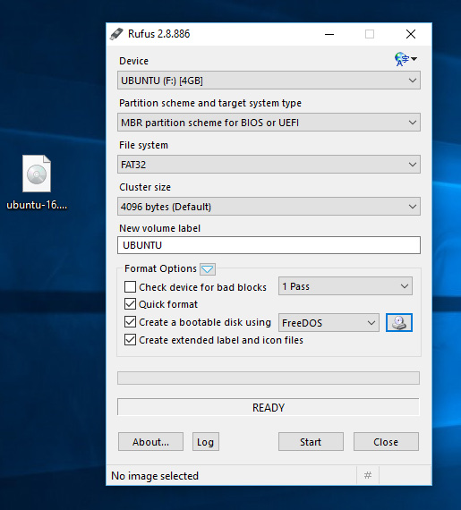

Live USB Stick
Imagine que você comprou um jogo novo e ele veio em um CD para que você possa instalá-lo em seu computador. O Live USB Stick funciona de forma parecida. Nele gravamos a imagem do sistema operacional que queremos instalar.
Quando o Live USB Stick é necessário?
- Dual boot no Windows
- Instalação Nativa em Windows
Nos outros casos, apenas baixar a imagem é necessário.
Obs: este manual não cobre instalação nativa em Macs.
Onde conseguir a imagem?
Neste manual, cobriremos o Ubuntu e o Fedora. Você pode baixar a imagem nos seguintes links:
Gravando a imagem no Pen Drive
Windows
1) Baixe o Rufus aqui
2) Abra-o e selecione o seu pen drive no menu "Device"

3) Clique no ícone do CD próximo ao menu "FreeDOS", então encontre a imagem ISO baixada e clique em "Open"
4) Clique em "Yes" quando perguntar sobre baixar o Syslinux software
5) Clique em OK para "Write in ISO image mode"
6) Confirme que o seu pendrive foi selecionado e OK para continuar
7) Seu Live USB Stick está pronto! :)
Fonte: http://www.ubuntu.com/download/desktop/create-a-usb-stick-on-windows